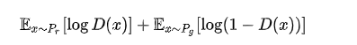
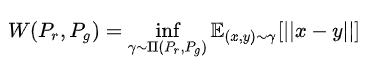

motivation
- GAN训练困难
- 生成器和判别器的loss无法指示训练进程
- 生成样本缺乏多样性
contribution
- 彻底解决GAN训练不稳定的问题，不再需要小心平衡生成器和判别器的训练程度
- 基本解决了collapse mode的问题，确保了生成样本的多样性
- 训练过程中终于有一个像交叉熵、准确率这样的数值来指示训练的进程，这个数值越小代表GAN训练得越好，代表生成器产生的图像质量越高
- 以上一切好处不需要精心设计的网络架构，最简单的多层全连接网络就可以做到
method
判别器最后一层去掉sigmoid
生成器和判别器的loss不取log
每次更新判别器的参数之后把它们的绝对值截断到不超过一个固定常数c
不要用基于动量的优化算法（包括momentum和Adam），推荐RMSProp，SGD也行
原始GAN缺陷
loss函数：
D loss：
第一种原始GAN形式的问题
判别器越好，生成器梯度消失越严重
在（近似）最优判别器下，最小化生成器的loss等价于最小化Pr与Pg之间的JS散度，而由于Pr与Pg几乎不可能有不可忽略的重叠，所以无论它们相距多远JS散度都是常数log2，最终导致生成器的梯度（近似）为0，梯度消失
推导：
令D(x)偏导为0：
当D(x)训练到最优时：

转化为JS散度：
当两个分布完全无重叠 ，上式为固定值log2，梯度为0
判别器训练得太好，生成器梯度消失，生成器loss降不下去；判别器训练得不好，生成器梯度不准，四处乱跑。只有判别器训练得不好不坏才行，但是这个火候又很难把握
第二种原始GAN形式的问题
最小化第二种生成器loss函数，会等价于最小化一个不合理的距离衡量，导致两个问题，一是梯度不稳定，二是collapse mode即多样性不足
推导：
KL散度转化为D*形式：
目标函数等价变形：
同时要最小化生成分布与真实分布的KL散度，却又要最大化两者的JS散度，一个要拉近，一个却要推远，导致在数值上则会导致梯度不稳定
第一种错误对应的是“生成器没能生成真实的样本”，惩罚微小；第二种错误对应的是“生成器生成了不真实的样本” ，惩罚巨大。第一种错误对应的是缺乏多样性，第二种错误对应的是缺乏准确性。
生成器宁可多生成一些重复但是很“安全”的样本，也不愿意去生成多样性的样本，即collapse mode
在原始GAN的（近似）最优判别器下，第一种生成器loss面临梯度消失问题，第二种生成器loss面临优化目标荒谬、梯度不稳定、对多样性与准确性惩罚不平衡导致mode collapse这几个问题
Wasserstein距离
Wasserstein距离（推土机距离）：
Wasserstein距离相比KL散度、JS散度的优越性在于，即便两个分布没有重叠，Wasserstein距离仍然能够反映它们的远近
如图所示：
WGAN
Wasserstrin距离中inf无法直接求解，因此无法转化为loss
将Wasserstrin距离转化为：
Lipschitz Function： 输出的变化小于等于输入的变化， k=1时为 1-Lipschitz ，即变化的不要太猛烈
如果没有对D的限制，当D(x1) 和D(x2)为正负无穷时可以最大化2）式，下图左。而现在对D有 1-Lipschitz 限制，则D的取值如下图右：
利用上式的好处是PG可以沿着梯度移动到蓝色Pdata，而原生GAN的判别器D为而二元分类器，输出为sigmoid函数。对于蓝色和橙色的分布，原生GAN为蓝线：对应Pdata的输出值为1，对应PG的输出值为0。所以蓝色曲线在蓝色和橙色分布的梯度为0，根本没有动力去挪动generator的输出来更新。而上式在两个分布附近都有梯度，可以继续更新。
WGAN优化
Weight clipping
- 为了保证满足k-Lipschitz，强制令权重w 限制在c ~ -c之间。在参数更新后，如果w>c，则令w=c， 如果w<-c，则令w=-c。
- 直觉上，如果神经网络的权重都限制在一定的范围内，那么网络的输出也会被限定在一定范围内。换句话说，这个网络会属于某个 K-Lipschitz。
- 我们其实不关心具体的K是多少，只要它不是正无穷就行，因为它只是会使得梯度变大K倍，并不会影响梯度的方向。
Gradient Penalty
权重分布：任由weight clipping去独立的限制网络参数的取值范围，有一种可能是大多数网络权重参数会集中在最大值和最小值附近而并不是一个比较好的连续分布，论文的作者通过实验也确实发现是这样一种情况。这毫无疑问带来的结果就是使得discriminator更倾向于拟合一种简单的描述函数，这种函数的泛化能力以及判断能力毫无疑问是非常弱的，那么经过这种discriminator回传的梯度信息的质量也是很差的
梯度爆炸/消失：weight clipping的处理很容易导致梯度消失或者梯度爆炸，因为discriminator虽然相对于generator来说结构较为简单，但其实也是一个多层结构，如果weight clipping的约束比较小的话，那么经过每一层网络，梯度都会变小，多层之后的情况就类似于一个指数衰减了，这样得到的结果就会导致梯度消失，反之则是梯度爆炸
前提：
- 为了保证 1-Lipschitz ，D(x)梯度小于等于1
- 为了提高D辨别能力，D(x)梯度尽可能大
WGAN-GP：

Ppenalty采样：
理论上为在整个样本空间进行采样，这个肯定是不可行的，论文中针对这个问题指出，只需要在generator生成样本和真实样本空间以及之间的区域就可以了，具体步骤如下：
- 从真实数据 Pdata 中采样得到一个点
- 从生成器生成的数据 PG 中采样得到一个点
- 为这两个点连线
- 在线上随机采样得到一个点作为 Ppenalty 的点。